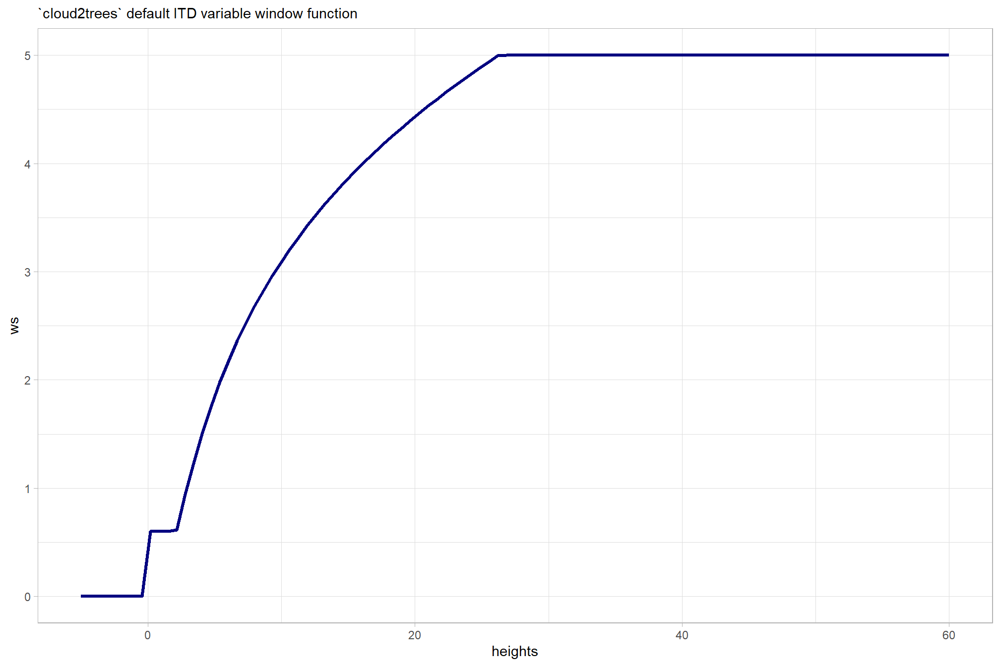
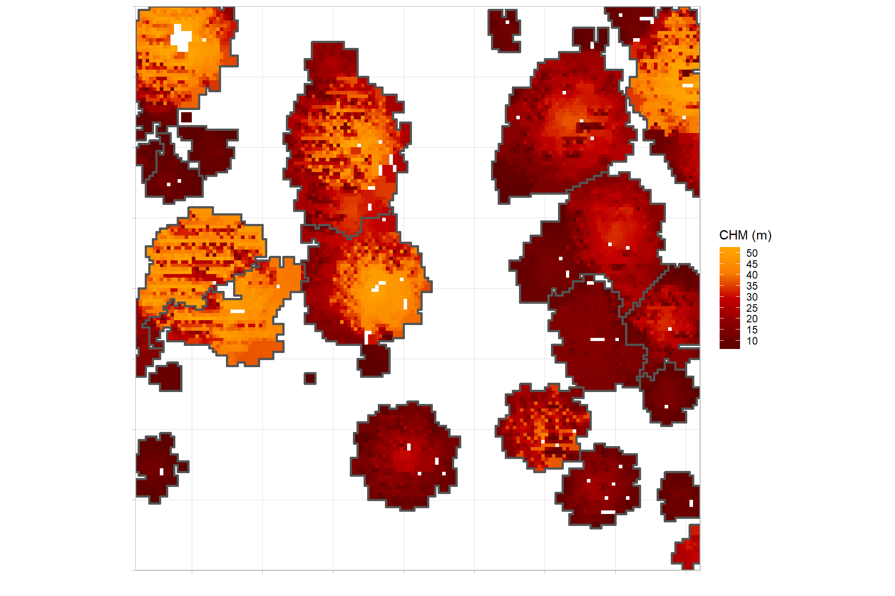
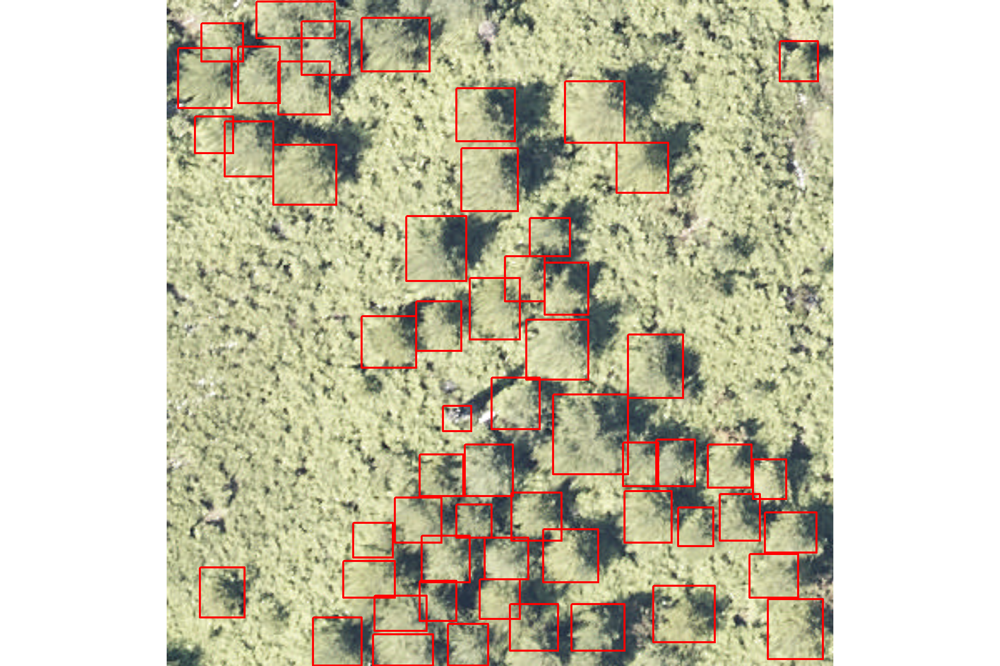

Section 4 Species Process
In this section we’ll use the benchmark data made available in the NeonTreeEvaluation data set (Weinstein et al. 2021) to test a simple process for classifying the species of the trees extracted using lidar-based tree detection methods.
The majority of research on classifying individual trees into different species categories using point cloud data from lidar or structure from motion data follows a similar process. This process generally involves segmenting individual trees and extracting key features from each tree using the point cloud, selecting the most relevant features, and training a machine learning model on a training dataset of trees with known species identities to classify tree species (Seidel et al. 2021; Meng et al. 2024). Such a process would require training data that may not be available in an easily accessible format over a broad extent (excepting FIA data, maybe?) which would be required for a general purpose process which we aim to define in the present research study. Instead, we will use a more simplistic process which uses the USFS Forest Type Groups of the Continental United States dataset Wilson (2023) available online here with a data overview here to attach the tree species group to individual trees detected from the point cloud data based on spatial location. At the time of this analysis the Wilson (2023) dataset was last updated on Oct 18, 2023 and depicts forest type groups for the Continental United States created from USFS Forest Inventory & Analysis plot data collected from 2014-2018. This forest type groups dataset provides a broad classification of forest types at a 30-meter resolution and is preferable for our objective to the older, coarser (Ruefenacht et al. 2008) dataset available at https://data.fs.usda.gov/geodata/rastergateway/forest_type/.
Here, we’ll outline the process to attach forest type group to the tree list based on the Forest Type Groups dataset. As a second option, we could utilize the TreeMap FIA data from Riley et al. (2021) to build a softmax regression (i.e. multinomial logistic regression) to predict the nominal variable tree species using the predictors tree height and location extracted from the point cloud data. This option roughly follows the process most represented in the existing literature as detailed above. Note that to predict the nominal variable tree species we could also use a random forest classifier as in Meng et al. (2024). The ultimate goal is to incorporate this process in the [cloud2trees]https://github.com/georgewoolsey/cloud2trees) package (Woolsey and Tinkham, 2024).
First, load the standard libraries
# bread-and-butter
library(tidyverse) # the tidyverse
library(viridis) # viridis colors
library(harrypotter) # hp colors
library(RColorBrewer) # brewer colors
library(scales) # work with number and plot scales
library(latex2exp)
# visualization
library(mapview) # interactive html maps
library(kableExtra) # tables
library(patchwork) # combine plots
library(ggnewscale) # ggnewscale
library(rgl) # rgl plotting
# spatial analysis
library(terra) # raster
library(sf) # simple features
library(lidR) # lidar data
library(cloud2trees) # tha cloud2trees
library(NeonTreeEvaluation) # benchmark data
# models
library(brms) # bayesian modelling
# utilities
library(rvest) # web scraping4.1 Example Lidar Data
Let’s load an example lidar dataset from Weinstein et al. (2021) in their NeonTreeEvaluation package.
We’ll use data from a NEON site that we know has conifers: RMNP (Rocky Mountain National Park)
# let's see some field trees data
NeonTreeEvaluation::field %>%
dplyr::filter(siteID == "RMNP") %>%
dplyr::count(taxonID) %>%
dplyr::arrange(desc(n))## taxonID n
## 1 PICOL 773
## 2 POTR5 292
## 3 PIPOS 91
## 4 PSME 89
## 5 ABLAL 57
## 6 PIEN 39
## 7 PIFL2 34let’s pick a site with the lowest proportion of POTR5
plots_temp <- NeonTreeEvaluation::field %>%
dplyr::filter(siteID == "RMNP") %>%
dplyr::group_by(plotID) %>%
dplyr::summarise(
trees = dplyr::n()
, conifers = sum(ifelse(taxonID=="POTR5", 0, 1))
) %>%
dplyr::mutate(pct_conifer = conifers/trees) %>%
dplyr::filter(trees>20) %>%
dplyr::arrange(desc(pct_conifer), desc(trees))
plots_temp## # A tibble: 20 × 4
## plotID trees conifers pct_conifer
## <fct> <int> <dbl> <dbl>
## 1 RMNP_042 111 111 1
## 2 RMNP_043 104 104 1
## 3 RMNP_047 59 59 1
## 4 RMNP_008 50 50 1
## 5 RMNP_048 50 50 1
## 6 RMNP_001 41 41 1
## 7 RMNP_006 39 39 1
## 8 RMNP_014 36 36 1
## 9 RMNP_012 35 35 1
## 10 RMNP_003 30 30 1
## 11 RMNP_018 29 29 1
## 12 RMNP_005 24 24 1
## 13 RMNP_002 21 21 1
## 14 RMNP_041 131 128 0.977
## 15 RMNP_004 27 26 0.963
## 16 RMNP_049 36 34 0.944
## 17 RMNP_007 30 24 0.8
## 18 RMNP_044 111 68 0.613
## 19 RMNP_045 229 57 0.249
## 20 RMNP_046 73 13 0.178look at the tree data for this plot
NeonTreeEvaluation::field %>%
dplyr::filter(plotID == plots_temp[1,]$plotID) %>%
dplyr::count(taxonID, scientificName)## taxonID scientificName
## 1 PICOL Pinus contorta Douglas ex Loudon var. latifolia Engelm. ex S. Watson
## n
## 1 111get the lidar data
# get the laz file path
las_f_path_temp <- paste0(system.file(package = "NeonTreeEvaluation"),"/extdata/") %>%
list.files(recursive = T, pattern = ".*\\.(laz|las)$", full.names = T) %>%
unique() %>%
dplyr::as_tibble() %>%
dplyr::rename(f_path = 1) %>%
dplyr::filter(
stringr::str_detect(f_path, as.character(plots_temp[1,]$plotID))
) %>%
.[1] %>%
dplyr::pull(f_path)
# check the data
lidR::readLAS(las_f_path_temp)## class : LAS (v1.3 format 1)
## memory : 1.2 Mb
## extent : 453532.6, 453572.6, 4458556, 4458596 (xmin, xmax, ymin, ymax)
## coord. ref. : WGS 84 / UTM zone 13N
## area : 1653 m²
## points : 20.4 thousand points
## density : 12.35 points/m²
## density : 7.63 pulses/m²4.1.1 cloud2trees that lidar data
extract trees from the lidar data using cloud2trees
we do not need to get DBH or CBH for this testing
cloud2trees_ans <- cloud2trees::cloud2trees(
input_las_dir = las_f_path_temp
, output_dir = tempdir()
, estimate_tree_dbh = F
, estimate_tree_cbh = F
)let’s see what we got
## Rows: 107
## Columns: 20
## $ treeID <chr> "1_453532.6_4458594.6", "2_453544.6_4458594.…
## $ tree_height_m <dbl> 3.185, 12.866, 11.826, 4.287, 8.980, 7.009, …
## $ crown_area_m2 <dbl> 0.8750, 10.0000, 11.0625, 0.5625, 5.1875, 1.…
## $ fia_est_dbh_cm <dbl> NA, NA, NA, NA, NA, NA, NA, NA, NA, NA, NA, …
## $ fia_est_dbh_cm_lower <dbl> NA, NA, NA, NA, NA, NA, NA, NA, NA, NA, NA, …
## $ fia_est_dbh_cm_upper <dbl> NA, NA, NA, NA, NA, NA, NA, NA, NA, NA, NA, …
## $ dbh_cm <dbl> NA, NA, NA, NA, NA, NA, NA, NA, NA, NA, NA, …
## $ is_training_data <lgl> NA, NA, NA, NA, NA, NA, NA, NA, NA, NA, NA, …
## $ dbh_m <dbl> NA, NA, NA, NA, NA, NA, NA, NA, NA, NA, NA, …
## $ radius_m <dbl> NA, NA, NA, NA, NA, NA, NA, NA, NA, NA, NA, …
## $ basal_area_m2 <dbl> NA, NA, NA, NA, NA, NA, NA, NA, NA, NA, NA, …
## $ basal_area_ft2 <dbl> NA, NA, NA, NA, NA, NA, NA, NA, NA, NA, NA, …
## $ ptcld_extracted_dbh_cm <dbl> NA, NA, NA, NA, NA, NA, NA, NA, NA, NA, NA, …
## $ ptcld_predicted_dbh_cm <dbl> NA, NA, NA, NA, NA, NA, NA, NA, NA, NA, NA, …
## $ tree_cbh_m <dbl> NA, NA, NA, NA, NA, NA, NA, NA, NA, NA, NA, …
## $ is_training_cbh <lgl> NA, NA, NA, NA, NA, NA, NA, NA, NA, NA, NA, …
## $ comp_trees_per_ha <dbl> NA, NA, NA, NA, NA, NA, NA, NA, NA, NA, NA, …
## $ comp_relative_tree_height <dbl> NA, NA, NA, NA, NA, NA, NA, NA, NA, NA, NA, …
## $ comp_dist_to_nearest_m <dbl> NA, NA, NA, NA, NA, NA, NA, NA, NA, NA, NA, …
## $ geometry <POINT [m]> POINT (453532.6 4458595), POINT (45354…where is this?
zoom out if you can’t see anything
4.2 USFS National Forest Type Group dataset
Download the USFS National Forest Type Group dataset (Wilson 2023) available online here with a data overview here to attach the tree species group to individual trees detected from the point cloud data based on spatial location. At the time of this analysis the Wilson (2023) dataset was last updated on Oct 18, 2023 and depicts forest type groups for the Continental United States created from USFS Forest Inventory & Analysis plot data collected from 2014-2018. This forest type groups dataset provides a broad classification of forest types at a 30-meter resolution to attach the tree species group to individual trees detected from the point cloud data based on spatial location.
Here, we’ll outline the process to attach forest type group to the tree list based on the Forest Type Groups dataset.
4.2.1 Get the data
define a function to download the data
!!!The download function get_foresttype_raw() below works great…however, there is a hard limitation on the image api service with respect to maximum download limits. Attempting to get the entire extent of the data results in a downscaling from 30x30 m resolution to 808x808m resolution. Attempting to download the extent in chunks gets us closer to the native resolution (~50-100 m) but requires that the service returns the data without error for ~300-900 chunks; this process is ripe for error. As such, I resorted to utilizing the image service within ArcGIS Pro and used the following steps:
- connect to the image service via the “Open in ArcGIS Desktop” at the data source
- to get around the image service data limits, aggregate the raster to 90x90 m resolution in chunks
- open the Aggregate tool (Spatial Analyst tools)
- in the “Environments” tab change the extent to process in chunks
- chunk 1 in the “Environments” tab change the Extent “X and Y Extent” (t,l,r,b): 6868893.686445,-14469331.213417,-10383464.5467503,2480613.686445
- in the “Parameters” tab set the “Cell factor” to 3 with “Aggregation technique” to maximum (to prefer any data to no data which is coded as 0), everything else is default
- run the tool (this took 71 mins across 6 parallel instances for 1 chunk)
- export the raster layer as a .tif
- repeat for chunk 2 in the “Environments” tab change the Extent “X and Y Extent” (t,l,r,b): 6868893.686445,-10383464.5467503,-7114771.213417,2480613.686445
- Use the “Mosaic to New Raster” tool to combine the chunks using the maximum “Mosaic Operator” with a “Pixel Type” of 16-bit unsigned and 1 for “Number of Bands”
- export the raster layer as a .tif
- upload to Zenodo
- we’ll then define a download process to get our aggregated (90x90 m) forest type raster from Zenodo
Even though this process is inefficient and manual (i.e. painful), it is preferable to using the the USFS Forest Type Groups of the Continental United States dataset (Ruefenacht et al. 2008) which is older, coarser in resolution (250x250 m), and uses a custom projection system that does not have a well-known EPSG available in the terra and sf packages. Endure the pain once, the grass may be greener on the other side.
4.2.1.1 Get raw data
Not used but works (see discussion above). This function pulls the data directly from the image server.
# this is for:
# Wilson, B. T. (2021).
# Available online at: https://di-usfsdata.img.arcgis.com/arcgis/rest/services/CONUS_forest_type_group_2018_masked_202105122120120/ImageServer
# with a data overview at: https://www.arcgis.com/home/item.html?id=10760c83b9e44923bd3c18efdaa7319d
get_foresttype_raw <- function(savedir=NULL,force=F){
#Store users timeout options
timeout_option_backup <- getOption("timeout")
options(timeout = max(3600, getOption("timeout")))
if(is.null(savedir)){
# create dir
dir.create(paste0(system.file(package = "cloud2trees"),"/extdata"), showWarnings = FALSE)
# names
dirname <- paste0(system.file(package = "cloud2trees"),"/extdata/foresttype")
destination <- file.path(dirname,"foresttype.tif")
}else{
dirname <- file.path(savedir,"foresttype")
destination <- file.path(dirname,"foresttype.tif")
}
# create dir
dir.create(dirname, showWarnings = FALSE)
#check if already exists.
f <- tolower(list.files(dirname))
if(length(f)==0){f <- ""}
if(
max(grepl("foresttype.tif", f))==1
){
if(!force){
warning(paste("Data has already been downloaded to",dirname,", use force=T to overwrite"))
return(NULL)
}
}
# url
# # math to set the size parameter
# map_ext <- c(-1.4469E7,2480613,-7114771,6868893)
# (w <- map_ext[3]-map_ext[1])
# (h <- map_ext[4]-map_ext[2])
# c(w,h) %>% `*`(.001137) %>% round() # this returns the w,h to enter for size
# exporting the entire image at a resolution better than 808x808 is not possible with the image server data limits
# let's try chunking up the area, downloading tiles, then mosaicing to get a better resolution
# math to set the size parameter
map_ext <- c(-1.4469E7,2480613,-7114771,6868893)
(w <- map_ext[3]-map_ext[1])
(h <- map_ext[4]-map_ext[2])
# this returns the w,h to enter for size parameter
# c(w,h) %>% `*`(.001137) %>% round() %>% paste(collapse = ",") # this returns the w,h to enter for size..best
size_temp <- c(w,h) %>%
`*`(.0007) %>%
round() %>%
paste(collapse = "%2C") # paste(collapse = ",")
# chunk this
# x combinations
x_l <- dplyr::tibble(
xmin = seq(from = map_ext[1], to = map_ext[3], length.out = 15)
) %>%
dplyr::mutate(xmax = dplyr::lead(xmin, n = 1)) %>%
dplyr::filter(!is.na(xmax))
# y combinations
y_l <- dplyr::tibble(
ymin = seq(from = map_ext[2], to = map_ext[4], length.out = 15)
) %>%
dplyr::mutate(ymax = dplyr::lead(ymin, n = 1)) %>%
dplyr::filter(!is.na(ymax))
# combine
chunk_df <- tidyr::crossing(x_l,y_l) %>%
dplyr::mutate(
w = xmax - xmin
, h = ymax - ymin
)
# chunk_df %>% dplyr::glimpse()
# chunk_df %>%
# dplyr::mutate(n = dplyr::row_number()) %>%
# ggplot() +
# geom_rect(aes(xmin = xmin, xmax = xmax, ymin = ymin, ymax = ymax, fill = as.factor(n)), color = "black") +
# theme(legend.position = "none")
# function to build the api string and download
dl_ans <- 1:nrow(chunk_df) %>%
purrr::map(function(x){
# get the bounding box string
bb_temp <- chunk_df %>%
dplyr::select(xmin,ymin,xmax,ymax) %>%
dplyr::filter(dplyr::row_number() == x) %>%
c() %>%
unlist() %>%
paste(collapse = "%2C") # paste(collapse = ",")
# buld url
eval_url <- paste0(
"https://di-usfsdata.img.arcgis.com/arcgis/rest/services/CONUS_forest_type_group_2018_masked_202105122120120/ImageServer/exportImage?bbox="
, bb_temp # "-1.4469E7%2C2480613%2C-7114771%2C6868893"
, "&bboxSR=&size="
, size_temp # "8362%2C4989"
, "&imageSR=&time=&format=tiff&pixelType=U16&noData=&noDataInterpretation=esriNoDataMatchAny&interpolation=RSP_BilinearInterpolation&compression=None&compressionQuality=&bandIds=&sliceId=&mosaicRule=&renderingRule=&adjustAspectRatio=true&validateExtent=false&lercVersion=1&compressionTolerance=&f=html"
)
# now we have to parse the url return because this server creates a unique token for each request
html <- rvest::read_html(x = eval_url)
# get parent element
chrs <- html %>% rvest::html_elements("a")
# unnest children elements
iii <- chrs %>% rvest::html_text2() %>% purrr::detect_index(function(x) tolower(x) == "download image")
# download url
dl_url <- chrs[iii] %>% html_attr("href")
# get it
chunk_dest <- file.path(dirname, paste0("chunk_",x,".tif"))
message(paste("Downloading file to",chunk_dest))
download.file(dl_url, chunk_dest, mode = "wb")
})
options(timeout = timeout_option_backup)
return(dl_ans)
}4.2.1.2 Get cleaned data
This function downloads the cleaned data from the Zenodo archive
# this is for: [Ruefenacht et al. 2008](https://doi.org/10.14358/PERS.74.11.1379))
# The Forest Type Groups dataset provides a broad classification of forest types at a 250-meter resolution
# and is available at: https://data.fs.usda.gov/geodata/rastergateway/forest_type/
# ...select the "Conus Forest Type"
get_foresttype <- function(savedir=NULL,force=F){
#Store users timeout options
timeout_option_backup <- getOption("timeout")
options(timeout = max(3600, getOption("timeout")))
if(is.null(savedir)){
# create dir
dir.create(paste0(system.file(package = "cloud2trees"),"/extdata"), showWarnings = FALSE)
# names
destination <- paste0(system.file(package = "cloud2trees"),"/extdata/foresttype.zip")
dirname <- paste0(system.file(package = "cloud2trees"),"/extdata/foresttype")
}else{
destination <- file.path(savedir,"foresttype.zip")
dirname <- file.path(savedir,"foresttype")
}
# create dir
dir.create(dirname, showWarnings = FALSE)
#check if already exists.
f_dir <- file.path(dirname(destination),"foresttype/")
# f_dir <- paste0(system.file("extdata", "foresttype/", package = "cloud2trees"))
f <- toupper(list.files(f_dir))
if(length(f)==0){f <- ""}
if(
max(grepl("TREEMAP2016.TIF", f))==1 & max(grepl("TREEMAP2016_TREE_TABLE.CSV", f))==1
){
if(!force){
warning(paste("Data has already been downloaded to",dirname,", use force=T to overwrite"))
return(NULL)
}
}
# get data
eval_url <- "https://s3-us-west-2.amazonaws.com/fs.usda.rds/RDS-2021-0074/RDS-2021-0074_Data.zip"
message(paste("Downloading file to",destination))
download.file(eval_url, destination, mode = "wb")
unzip_download(destination)
options(timeout = timeout_option_backup)
}
## unzip function
unzip_download <- function(destination){
#location of unzip
base_dir <- dirname(destination)
#get file names
unzip_folder <- unzip(destination, list = TRUE)$Name[1]
unzipped_folder <- file.path(base_dir,unzip_folder)
unzip(destination,exdir=base_dir)
final_name <- file.path(base_dir,"foresttype/")
#Force delete of any previous folder
unlink(final_name,recursive = T)
file.rename(unzipped_folder,final_name)
#Remove zipped files
unlink(destination)
}call the function to download the data
# what dirs do we have already?
list.dirs(savedir_temp, recursive = F)
# get the data
get_foresttype(savedir = savedir_temp)
## get_foresttype_raw(savedir = savedir_temp) # if want to test the raw image extraction
# now what dirs?
list.dirs(savedir_temp, recursive = F)
# are there files in the foresttype dir?
list.files(file.path(savedir_temp, "foresttype"))4.2.2 Check the raster
let’s check this data
foresttype <-
# terra::rast("c:/Users/georg/Downloads/conus_forest-type/conus_foresttype.img")
# terra::rast("../data/foresttype/foresttype.tif")
terra::rast("E:\\lidar_phys_fire_mods\\data\\foresttype.tif")
# what?
foresttype## class : SpatRaster
## dimensions : 48759, 81718, 1 (nrow, ncol, nlyr)
## resolution : 90, 90 (x, y)
## extent : -14469331, -7114711, 2480614, 6868924 (xmin, xmax, ymin, ymax)
## coord. ref. : WGS 84 / Pseudo-Mercator (EPSG:3857)
## source : foresttype.tif
## name : foresttype
## min value : 0
## max value : 999## [1] "foresttype"## [1] 90 90## [1] "PROJCRS[\"WGS 84 / Pseudo-Mercator\",\n BASEGEOGCRS[\"WGS 84\",\n DATUM[\"World Geodetic System 1984\",\n ELLIPSOID[\"WGS 84\",6378137,298.257223563,\n LENGTHUNIT[\"metre\",1]]],\n PRIMEM[\"Greenwich\",0,\n ANGLEUNIT[\"degree\",0.0174532925199433]],\n ID[\"EPSG\",4326]],\n CONVERSION[\"unnamed\",\n METHOD[\"Popular Visualisation Pseudo Mercator\",\n ID[\"EPSG\",1024]],\n PARAMETER[\"Latitude of natural origin\",0,\n ANGLEUNIT[\"degree\",0.0174532925199433],\n ID[\"EPSG\",8801]],\n PARAMETER[\"Longitude of natural origin\",0,\n ANGLEUNIT[\"degree\",0.0174532925199433],\n ID[\"EPSG\",8802]],\n PARAMETER[\"False easting\",0,\n LENGTHUNIT[\"metre\",1],\n ID[\"EPSG\",8806]],\n PARAMETER[\"False northing\",0,\n LENGTHUNIT[\"metre\",1],\n ID[\"EPSG\",8807]]],\n CS[Cartesian,2],\n AXIS[\"easting\",east,\n ORDER[1],\n LENGTHUNIT[\"metre\",1]],\n AXIS[\"northing\",north,\n ORDER[2],\n LENGTHUNIT[\"metre\",1]],\n ID[\"EPSG\",3857]]"what does this cover?
# the projection is not carried over when going from spatextent to vector
crs_temp <- terra::crs(foresttype, describe = T)
epsg_temp <- paste(crs_temp$authority[1], crs_temp$code[1], sep = ":")
# where is this?
terra::ext(foresttype) %>%
terra::vect() %>%
sf::st_as_sf() %>%
sf::st_set_crs(epsg_temp) %>%
mapview::mapview()quick map
let’s check the values
## layer value count
## 1 1 0 1016698844
## 2 1 500 182777000
## 3 1 800 53970418
## 4 1 180 53178290
## 5 1 160 41136189
## 6 1 200 37352480
## 7 1 900 36640662
## 8 1 600 34110206
## 9 1 260 33204632
## 10 1 220 27870805
## 11 1 970 24823216
## 12 1 280 178438244.2.3 Forest type group data
let’s create a lookup table of these forest type groups using the data table from Woudenberg et al. (2010) Appendix D
foresttype_lookup <-
c(
100, "White / red / jack pine group",
101, "Jack pine",
102, "Red pine",
103, "Eastern white pine",
104, "Eastern white pine / eastern hemlock",
105, "Eastern hemlock",
120, "Spruce / fir group",
121, "Balsam fir",
122, "White spruce",
123, "Red spruce",
124, "Red spruce / balsam fir",
125, "Black spruce",
126, "Tamarack",
127, "Northern white-cedar",
128, "Fraser fir",
129, "Red spruce / Fraser fir",
140, "Longleaf / slash pine group",
141, "Longleaf pine",
142, "Slash pine",
150, "Tropical pine group",
151, "Tropical pines",
160, "Loblolly / shortleaf pine group",
161, "Loblolly pine",
162, "Shortleaf pine",
163, "Virginia pine",
164, "Sand pine",
165, "Table mountain pine",
166, "Pond pine",
167, "Pitch pine",
168, "Spruce pine",
170, "Other eastern softwoods group",
171, "Eastern redcedar",
172, "Florida softwoods",
180, "Pinyon / juniper group",
182, "Rocky Mountain juniper",
184, "Juniper woodland",
185, "Pinyon / juniper woodland",
200, "Douglas-fir group",
201, "Douglas-fir",
202, "Port-Orford-cedar",
203, "Bigcone Douglas-fir ",
220, "Ponderosa pine group",
221, "Ponderosa pine",
222, "Incense-cedar",
224, "Sugar pine",
225, "Jeffrey pine",
226, "Coulter pine",
240, "Western white pine group",
241, "Western white pine",
260, "Fir / spruce / mountain hemlock group",
261, "White fir",
262, "Red fir",
263, "Noble fir",
264, "Pacific silver fir",
265, "Engelmann spruce",
266, "Engelmann spruce / subalpine fir",
267, "Grand fir",
268, "Subalpine fir",
269, "Blue spruce",
270, "Mountain hemlock",
271, "Alaska-yellow-cedar",
280, "Lodgepole pine group",
281, "Lodgepole pine",
300, "Hemlock / Sitka spruce group",
301, "Western hemlock",
304, "Western redcedar",
305, "Sitka spruce",
320, "Western larch group",
321, "Western larch",
340, "Redwood group",
341, "Redwood",
342, "Giant sequoia",
360, "Other western softwoods group",
361, "Knobcone pine",
362, "Southwestern white pine",
363, "Bishop pine",
364, "Monterey pine",
365, "Foxtail pine / bristlecone pine",
366, "Limber pine",
367, "Whitebark pine",
368, "Miscellaneous western softwoods",
369, "Western juniper",
370, "California mixed conifer group",
371, "California mixed conifer",
380, "Exotic softwoods group",
381, "Scotch pine",
383, "Other exotic softwoods",
384, "Norway spruce",
385, "Introduced larch",
390, "Other softwoods group",
391, "Other softwoods",
400, "Oak / pine group",
401, "Eastern white pine / northern red oak / white ash",
402, "Eastern redcedar / hardwood",
403, "Longleaf pine / oak",
404, "Shortleaf pine / oak",
405, "Virginia pine / southern red oak",
406, "Loblolly pine / hardwood",
407, "Slash pine / hardwood",
409, "Other pine / hardwood",
500, "Oak / hickory group",
501, "Post oak / blackjack oak",
502, "Chestnut oak",
503, "White oak / red oak / hickory",
504, "White oak",
505, "Northern red oak",
506, "Yellow-poplar / white oak / northern red oak",
507, "Sassafras / persimmon",
508, "Sweetgum / yellow-poplar",
509, "Bur oak",
510, "Scarlet oak",
511, "Yellow-poplar",
512, "Black walnut",
513, "Black locust",
514, "Southern scrub oak",
515, "Chestnut oak / black oak / scarlet oak",
516, "Cherry / white ash / yellow-poplar",
517, "Elm / ash / black locust",
519, "Red maple / oak",
520, "Mixed upland hardwoods",
600, "Oak / gum / cypress group",
601, "Swamp chestnut oak / cherrybark oak",
602, "Sweetgum / Nuttall oak / willow oak",
605, "Overcup oak / water hickory",
606, "Atlantic white-cedar",
607, "Baldcypress / water tupelo",
608, "Sweetbay / swamp tupelo / red maple",
609, "Baldcypress / pondcypress",
700, "Elm / ash / cottonwood group",
701, "Black ash / American elm / red maple",
702, "River birch / sycamore",
703, "Cottonwood",
704, "Willow",
705, "Sycamore / pecan / American elm",
706, "Sugarberry / hackberry / elm / green ash",
707, "Silver maple / American elm",
708, "Red maple / lowland",
709, "Cottonwood / willow",
722, "Oregon ash",
800, "Maple / beech / birch group",
801, "Sugar maple / beech / yellow birch",
802, "Black cherry",
805, "Hard maple / basswood",
809, "Red maple / upland",
900, "Aspen / birch group",
901, "Aspen",
902, "Paper birch",
903, "Gray birch",
904, "Balsam poplar",
905, "Pin cherry",
910, "Alder / maple group",
911, "Red alder",
912, "Bigleaf maple",
920, "Western oak group",
921, "Gray pine",
922, "California black oak",
923, "Oregon white oak",
924, "Blue oak",
931, "Coast live oak",
933, "Canyon live oak",
934, "Interior live oak",
935, "California white oak (valley oak)",
940, "Tanoak / laurel group",
941, "Tanoak",
942, "California laurel",
943, "Giant chinkapin",
960, "Other hardwoods group",
961, "Pacific madrone",
962, "Other hardwoods",
970, "Woodland hardwoods group",
971, "Deciduous oak woodland",
972, "Evergreen oak woodland",
973, "Mesquite woodland",
974, "Cercocarpus (mountain brush) woodland",
975, "Intermountain maple woodland",
976, "Miscellaneous woodland hardwoods",
980, "Tropical hardwoods group",
982, "Mangrove",
983, "Palms",
988, "Cloud forest",
989, "Other tropical hardwoods",
990, "Exotic hardwoods group",
991, "Paulownia",
992, "Melaleuca",
993, "Eucalyptus",
995, "Other exotic hardwoods",
999, "Nonstocked",
## this list below is from:
101, "Jack pine",
102, "Red pine",
103, "Eastern white pine",
104, "Eastern White pine / Eastern hemlock",
105, "Eastern hemlock",
121, "Balsam fir",
122, "White spruce",
123, "Red spruce",
124, "Red spruce / balsam fir",
125, "Black spruce",
126, "Tamarack",
127, "Northern white-cedar",
141, "Longleaf pine",
142, "Slash pine",
161, "Loblolly pine",
162, "Shortleaf pine",
163, "Virginia pine",
164, "Sand pine",
165, "Table-mountain pine",
166, "Pond pine",
167, "Pitch pine",
168, "Spruce pine",
181, "Eastern redcedar",
182, "Rocky Mountain juniper",
183, "Western juniper",
184, "Juniper woodland",
185, "Pinyon juniper woodland",
201, "Douglas-fir",
202, "Port-Orford-cedar",
221, "Ponderosa pine",
222, "Incense cedar",
223, "Jeffrey pine / Coulter pine / bigcone Douglas-fir",
224, "Sugar pine",
241, "Western white pine",
261, "White fir",
262, "Red fir",
263, "Noble fir",
264, "Pacific silver fir",
265, "Engelmann spruce",
266, "Engelmann spruce / subalpine fir",
267, "Grand fir",
268, "Subalpine fir",
269, "Blue spruce",
270, "Mountain hemlock",
271, "Alaska-yellow-cedar",
281, "Lodgepole pine",
301, "Western hemlock",
304, "Western redcedar",
305, "Sitka spruce",
321, "Western larch",
341, "Redwood",
342, "Giant sequoia",
361, "Knobcone pine",
362, "Southwest white pine",
363, "Bishop pine",
364, "Monterey pine",
365, "Foxtail pine / bristlecone pine",
366, "Limber pine",
367, "Whitebark pine",
368, "Misc. western softwoods",
371, "California mixed conifer",
381, "Scotch pine",
382, "Australian pine",
383, "Other exotic softwoods",
384, "Norway Spruce",
385, "Introduced larch",
401, "Eastern white pine / N. red oak / white ash",
402, "Eastern redcedar / hardwood",
403, "Longleaf pine / oak",
404, "Shortleaf pine / oak",
405, "Virginia pine / southern red oak",
406, "Loblolly pine / hardwood",
407, "Slash pine / hardwood",
409, "Other pine / hardwood",
501, "Post oak / blackjack oak",
502, "Chestnut oak",
503, "White oak / red oak / hickory",
504, "White oak",
505, "Northern red oak",
506, "Yellow-poplar / white oak / N. red oak",
507, "Sassafras / persimmon",
508, "Sweetgum / yellow-poplar",
509, "Bur oak",
510, "Scarlet oak",
511, "Yellow-poplar",
512, "Black walnut",
513, "Black locust",
514, "Southern scrub oak",
515, "Chestnut oak / black oak / scarlet oak",
519, "Red maple / oak",
520, "Mixed upland hardwoods",
601, "Swamp chestnut oak / cherrybark oak",
602, "Sweetgum / Nuttall oak / willow oak",
605, "Overcup oak / water hickory",
606, "Atlantic white-cedar",
607, "Baldcypress / water tupelo",
608, "Sweetbay / swamp tupelo / red maple",
701, "Black ash / American elm / red maple",
702, "River birch / sycamore",
703, "Cottonwood",
704, "Willow",
705, "Sycamore / pecan / American elm",
706, "Sugarberry / hackberry / elm / green ash",
707, "Silver maple / American elm",
708, "Red maple / lowland",
709, "Cottonwood / willow",
722, "Oregon ash",
801, "Sugar maple / beech / yellow birch",
802, "Black cherry",
803, "Cherry / ash / yellow-poplar",
805, "Hard maple / basswood",
807, "Elm / ash / locust",
809, "Red maple / upland",
901, "Aspen",
902, "Paper birch",
904, "Balsam poplar",
911, "Red alder",
912, "Bigleaf maple",
921, "Gray pine",
922, "California black oak",
923, "Oregon white oak",
924, "Blue oak",
925, "Deciduous oak woodland",
926, "Evergreen oak woodland",
931, "Coast live oak",
932, "Canyon live oak / interior live oak",
941, "Tanoak",
942, "Califonia laurel",
943, "Giant chinkapin",
951, "Pacific madrone",
952, "Mesquite Woodland",
953, "Cercocarpus woodland",
954, "Intermountain maple woodland",
955, "Misc. western hardwood woodlands",
981, "Sabal palm",
982, "Mangrove",
989, "Other tropical",
991, "Paulownia",
992, "Melaluca",
993, "Eucalyptus",
995, "Other exotic hardwoods"
) %>%
matrix(ncol = 2, byrow = T) %>%
dplyr::as_tibble() %>%
dplyr::rename(forest_type_code = 1, forest_type = 2) %>%
dplyr::mutate(forest_type = stringr::str_squish(forest_type)) %>%
dplyr::group_by(forest_type_code) %>%
dplyr::filter(dplyr::row_number()==1) %>%
dplyr::ungroup()
# huh?
foresttype_lookup %>% dplyr::glimpse()## Rows: 202
## Columns: 2
## $ forest_type_code <chr> "100", "101", "102", "103", "104", "105", "120", "121…
## $ forest_type <chr> "White / red / jack pine group", "Jack pine", "Red pi…let’s create a column for the “forest type group” which is included in this data as any type code that is a multiple of 10 starting at 100…but remember we need to exclude the “999” which is “Nonstocked”
foresttype_lookup <-
foresttype_lookup %>%
# define forest_type_group_code as the 10's value
dplyr::mutate(
forest_type_group_code = forest_type_code %>%
stringr::str_sub(end = -2) %>% # cuts off the last digit from a number as a string
paste0("0")
, forest_type_group = dplyr::case_when(
forest_type_group_code == forest_type_code ~ forest_type
, T ~ NA
)
) %>%
dplyr::arrange(as.numeric(forest_type_code)) %>%
dplyr::group_by(forest_type_group_code) %>%
dplyr::mutate(
forest_type_group = dplyr::first(forest_type_group, na_rm = T)
, hardwood_softwood = dplyr::case_when(
as.numeric(forest_type_group_code) > 370 ~ "Hardwood"
, as.numeric(forest_type_group_code) <= 370 ~ "Softwood"
, T ~ "Error"
)
) %>%
dplyr::ungroup() %>%
# some type groups are missing...lump them into other
dplyr::mutate(
forest_type_group_code = dplyr::case_when(
is.na(forest_type_group) & as.numeric(forest_type_code) > 370 ~ "960"
, is.na(forest_type_group) & as.numeric(forest_type_code) <= 370 ~ "390"
, T ~ forest_type_group_code
)
, forest_type_group = dplyr::case_when(
is.na(forest_type_group) & as.numeric(forest_type_code) > 370 ~ "Other hardwoods group"
, is.na(forest_type_group) & as.numeric(forest_type_code) <= 370 ~ "Other softwoods group"
, T ~ forest_type_group
)
) %>%
# just drop the non-stocked
dplyr::filter(forest_type_code != "999" & tolower(forest_type) != "nonstocked")
# huh?
foresttype_lookup %>% dplyr::glimpse()## Rows: 201
## Columns: 5
## $ forest_type_code <chr> "100", "101", "102", "103", "104", "105", "120"…
## $ forest_type <chr> "White / red / jack pine group", "Jack pine", "…
## $ forest_type_group_code <chr> "100", "100", "100", "100", "100", "100", "120"…
## $ forest_type_group <chr> "White / red / jack pine group", "White / red /…
## $ hardwood_softwood <chr> "Softwood", "Softwood", "Softwood", "Softwood",…export this for upload to Zenodo
4.2.4 Forest type group example
let’s look at the Forest Type Groups raster for our example area and use our fancy lookup data to make use of the forest type group codes in the raster
# aoi
box_temp <- cloud2trees_ans$crowns_sf %>%
sf::st_bbox() %>%
sf::st_as_sfc() %>%
sf::st_buffer(200) %>%
terra::vect() %>%
terra::project(terra::crs(foresttype))
# crop it and merge with the forest type group data
aoi_temp <- foresttype %>%
terra::crop(box_temp) %>%
terra::mask(box_temp) %>%
as.data.frame(xy = T) %>%
dplyr::rename(forest_type_code=3) %>%
dplyr::mutate(forest_type_code = as.character(forest_type_code)) %>%
dplyr::left_join(foresttype_lookup, by = "forest_type_code")
# huh
aoi_temp %>% dplyr::glimpse()## Rows: 36
## Columns: 7
## $ x <dbl> -11749576, -11749486, -11749396, -11749306, -11…
## $ y <dbl> 4906429, 4906429, 4906429, 4906429, 4906429, 49…
## $ forest_type_code <chr> "280", "280", "900", "0", "900", "900", "900", …
## $ forest_type <chr> "Lodgepole pine group", "Lodgepole pine group",…
## $ forest_type_group_code <chr> "280", "280", "900", NA, "900", "900", "900", "…
## $ forest_type_group <chr> "Lodgepole pine group", "Lodgepole pine group",…
## $ hardwood_softwood <chr> "Softwood", "Softwood", "Hardwood", NA, "Hardwo…let’s plot the Forest Type Groups raster for our example area
# plot it
ggplot() +
geom_tile(
data = aoi_temp
, mapping = aes(x=x, y=y, fill=forest_type_group)
, color = NA
, alpha = 0.7
) +
geom_sf(
data = cloud2trees_ans$crowns_sf %>%
sf::st_bbox() %>%
sf::st_as_sfc() %>%
terra::vect() %>%
terra::project(terra::crs(foresttype)) %>%
sf::st_as_sf()
, fill = NA
, color = "navy"
, lwd = 1
) +
labs(fill = "forest\ntype group", subtitle = "extent of lidar detected trees shown in blue") +
harrypotter::scale_fill_hp_d("lunalovegood", na.value = "black") +
theme_void()
this looks like the forest type we expected based on RMNP example data
also, note that there are raster cells that do not have a forest type. if a lidar-detected tree falls within one of these “no forest type” cells, we’ll have to figure out how to fill in the forest type. perhaps we can use the majority based on the other trees that overlap cells with a forest type? but what if none of our trees overlap with an actual forest type? we’ll have to figure out how to find the nearest cell with a forest type.
4.3 Forest Type to Tree List
Now that we have all the data, let’s define a process to attach the forest type group data to a lidar-derived tree list. Remember, there are raster cells that do not have a forest type. If a lidar-detected tree falls within one of these “no forest type” cells, we’ll have to figure out how to fill in the forest type. Perhaps we can use the majority based on the other trees that overlap cells with a forest type? But what if none of our trees overlap with an actual forest type? We’ll have to figure out how to find the nearest cell with a forest type.
4.3.1 Example with original forest type
our input data is a tree list with location data
## Rows: 107
## Columns: 20
## $ treeID <chr> "1_453532.6_4458594.6", "2_453544.6_4458594.…
## $ tree_height_m <dbl> 3.185, 12.866, 11.826, 4.287, 8.980, 7.009, …
## $ crown_area_m2 <dbl> 0.8750, 10.0000, 11.0625, 0.5625, 5.1875, 1.…
## $ fia_est_dbh_cm <dbl> NA, NA, NA, NA, NA, NA, NA, NA, NA, NA, NA, …
## $ fia_est_dbh_cm_lower <dbl> NA, NA, NA, NA, NA, NA, NA, NA, NA, NA, NA, …
## $ fia_est_dbh_cm_upper <dbl> NA, NA, NA, NA, NA, NA, NA, NA, NA, NA, NA, …
## $ dbh_cm <dbl> NA, NA, NA, NA, NA, NA, NA, NA, NA, NA, NA, …
## $ is_training_data <lgl> NA, NA, NA, NA, NA, NA, NA, NA, NA, NA, NA, …
## $ dbh_m <dbl> NA, NA, NA, NA, NA, NA, NA, NA, NA, NA, NA, …
## $ radius_m <dbl> NA, NA, NA, NA, NA, NA, NA, NA, NA, NA, NA, …
## $ basal_area_m2 <dbl> NA, NA, NA, NA, NA, NA, NA, NA, NA, NA, NA, …
## $ basal_area_ft2 <dbl> NA, NA, NA, NA, NA, NA, NA, NA, NA, NA, NA, …
## $ ptcld_extracted_dbh_cm <dbl> NA, NA, NA, NA, NA, NA, NA, NA, NA, NA, NA, …
## $ ptcld_predicted_dbh_cm <dbl> NA, NA, NA, NA, NA, NA, NA, NA, NA, NA, NA, …
## $ tree_cbh_m <dbl> NA, NA, NA, NA, NA, NA, NA, NA, NA, NA, NA, …
## $ is_training_cbh <lgl> NA, NA, NA, NA, NA, NA, NA, NA, NA, NA, NA, …
## $ comp_trees_per_ha <dbl> NA, NA, NA, NA, NA, NA, NA, NA, NA, NA, NA, …
## $ comp_relative_tree_height <dbl> NA, NA, NA, NA, NA, NA, NA, NA, NA, NA, NA, …
## $ comp_dist_to_nearest_m <dbl> NA, NA, NA, NA, NA, NA, NA, NA, NA, NA, NA, …
## $ geometry <POINT [m]> POINT (453532.6 4458595), POINT (45354…we want to attach the forest type group data to the tree list
## class : SpatRaster
## dimensions : 48759, 81718, 1 (nrow, ncol, nlyr)
## resolution : 90, 90 (x, y)
## extent : -14469331, -7114711, 2480614, 6868924 (xmin, xmax, ymin, ymax)
## coord. ref. : WGS 84 / Pseudo-Mercator (EPSG:3857)
## source : foresttype.tif
## name : foresttype
## min value : 0
## max value : 999this is easy with terra::extract()
tree_ftype_temp <-
terra::extract(
x = foresttype
, y = cloud2trees_ans$treetops_sf %>%
terra::vect() %>%
terra::project(terra::crs(foresttype)) # don't forget to reproject
)
# huh?
tree_ftype_temp %>% dplyr::glimpse()## Rows: 107
## Columns: 2
## $ ID <dbl> 1, 2, 3, 4, 5, 6, 7, 8, 9, 10, 11, 12, 13, 14, 15, 16, 17, …
## $ foresttype <int> 900, 900, 900, 900, 900, 900, 900, 900, 900, 900, 900, 280,…now let’s join it back with our data and check it
treetops_sf_new <- cloud2trees_ans$treetops_sf %>%
dplyr::mutate(
forest_type_code = tree_ftype_temp$foresttype %>% as.character()
) %>%
dplyr::left_join(foresttype_lookup, by = "forest_type_code")
# huh?
treetops_sf_new %>% dplyr::glimpse()## Rows: 107
## Columns: 25
## $ treeID <chr> "1_453532.6_4458594.6", "2_453544.6_4458594.…
## $ tree_height_m <dbl> 3.185, 12.866, 11.826, 4.287, 8.980, 7.009, …
## $ crown_area_m2 <dbl> 0.8750, 10.0000, 11.0625, 0.5625, 5.1875, 1.…
## $ fia_est_dbh_cm <dbl> NA, NA, NA, NA, NA, NA, NA, NA, NA, NA, NA, …
## $ fia_est_dbh_cm_lower <dbl> NA, NA, NA, NA, NA, NA, NA, NA, NA, NA, NA, …
## $ fia_est_dbh_cm_upper <dbl> NA, NA, NA, NA, NA, NA, NA, NA, NA, NA, NA, …
## $ dbh_cm <dbl> NA, NA, NA, NA, NA, NA, NA, NA, NA, NA, NA, …
## $ is_training_data <lgl> NA, NA, NA, NA, NA, NA, NA, NA, NA, NA, NA, …
## $ dbh_m <dbl> NA, NA, NA, NA, NA, NA, NA, NA, NA, NA, NA, …
## $ radius_m <dbl> NA, NA, NA, NA, NA, NA, NA, NA, NA, NA, NA, …
## $ basal_area_m2 <dbl> NA, NA, NA, NA, NA, NA, NA, NA, NA, NA, NA, …
## $ basal_area_ft2 <dbl> NA, NA, NA, NA, NA, NA, NA, NA, NA, NA, NA, …
## $ ptcld_extracted_dbh_cm <dbl> NA, NA, NA, NA, NA, NA, NA, NA, NA, NA, NA, …
## $ ptcld_predicted_dbh_cm <dbl> NA, NA, NA, NA, NA, NA, NA, NA, NA, NA, NA, …
## $ tree_cbh_m <dbl> NA, NA, NA, NA, NA, NA, NA, NA, NA, NA, NA, …
## $ is_training_cbh <lgl> NA, NA, NA, NA, NA, NA, NA, NA, NA, NA, NA, …
## $ comp_trees_per_ha <dbl> NA, NA, NA, NA, NA, NA, NA, NA, NA, NA, NA, …
## $ comp_relative_tree_height <dbl> NA, NA, NA, NA, NA, NA, NA, NA, NA, NA, NA, …
## $ comp_dist_to_nearest_m <dbl> NA, NA, NA, NA, NA, NA, NA, NA, NA, NA, NA, …
## $ geometry <POINT [m]> POINT (453532.6 4458595), POINT (45354…
## $ forest_type_code <chr> "900", "900", "900", "900", "900", "900", "9…
## $ forest_type <chr> "Aspen / birch group", "Aspen / birch group"…
## $ forest_type_group_code <chr> "900", "900", "900", "900", "900", "900", "9…
## $ forest_type_group <chr> "Aspen / birch group", "Aspen / birch group"…
## $ hardwood_softwood <chr> "Hardwood", "Hardwood", "Hardwood", "Hardwoo…check it on the map
# plot it
ggplot() +
geom_tile(
data = aoi_temp
, mapping = aes(x=x, y=y, fill=forest_type_group)
, color = NA
, alpha = 0.7
) +
geom_sf(
data = treetops_sf_new %>%
terra::vect() %>%
terra::project(terra::crs(foresttype)) %>% # don't forget to reproject
sf::st_as_sf()
, mapping = aes(color = forest_type_group)
, show.legend = F
) +
labs(fill = "forest\ntype group", subtitle = "lidar-detected tree points with forest type group") +
harrypotter::scale_fill_hp_d("lunalovegood", na.value = "black") +
harrypotter::scale_color_hp_d("lunalovegood", na.value = "black") +
theme_void()
looks good!
4.3.2 Fill missing forest type example
now we need to figure out what to do if the tree data overlaps with raster cells with no forest type group
I originally tried to create a raster dataset with full coverage of forest type groups and just fill non-forest cells with the value from the nearest forest type. this “full coverage” data set could then be the master data we upload/download from Zenodo (since we’re already using custom data) and apply the terra::extract() function. This option is not going to work because 1) there are too many blank cells to fill (~80% of the original raster); 2) we want to give a feasible answer and if there is a great distance between the tree data and the nearest forest type then the answer could be misleading (we’ll just return no answer, but what is a “great distance”?)
The process we’ll use to fill NA cell values is:
* create a bounding box around the tree point data
* expand the extent by the greater of double the bounding box or 1 km
+ outside of this would be a “great distance” to interpolate forest type
* crop the forest type raster to the bounding box extent
* fill in NA raster cell values using nearest neighbor interpolation
* return the forest type group attached to the tree using terra::extract()
first, get the bounding box of the tree data and double the extent
# get extent of data
bbox_temp <- cloud2trees_ans$treetops_sf %>% sf::st_bbox()
# find largest side
buffer_temp <- max(
bbox_temp["xmax"]-bbox_temp["xmin"]
, bbox_temp["ymax"]-bbox_temp["ymin"]
) %>%
max(1000)
# apply the buffer
ext_temp <- bbox_temp %>%
sf::st_as_sfc() %>%
sf::st_buffer(buffer_temp, endCapStyle = "SQUARE") %>%
terra::vect() %>%
terra::project(terra::crs(foresttype))mask the raster to this extent
foresttype_temp <- foresttype %>%
terra::crop(ext_temp) %>% # crop it first to make if faster
terra::mask(ext_temp)mark all non-forest cells as “NA” in the cropped raster
# rcl = two column matrix ("is", "becomes") can be useful for classifying integer
# values. In that case, the arguments right and include.lowest are ignored.
# unique type codes
type_code_temp <- foresttype_lookup %>%
dplyr::pull(forest_type_code) %>%
as.numeric() %>%
unique()
# matrix
rcl_temp <- c(type_code_temp, type_code_temp) %>%
matrix(ncol=2, byrow=F)
# update raster to mark all non-forest cells as NA
foresttype_temp <- foresttype_temp %>%
terra::classify(
rcl = rcl_temp
, others = NA
) do we have NA cells?
## isNA
## foresttype 194here’s what that looks like
p1_temp <-
# plot it
ggplot() +
geom_tile(
data = foresttype_temp %>%
as.data.frame(xy = T) %>%
dplyr::rename(forest_type_code=3) %>%
dplyr::mutate(forest_type_code = as.character(forest_type_code)) %>%
dplyr::left_join(foresttype_lookup, by = "forest_type_code")
, mapping = aes(x=x, y=y, fill=forest_type_group)
, color = NA
, alpha = 0.7
) +
geom_sf(
data = bbox_temp %>%
sf::st_as_sfc() %>%
terra::vect() %>%
terra::project(terra::crs(foresttype)) %>%
sf::st_as_sf()
, mapping = aes(color = "trees extent")
, fill = NA
) +
geom_sf(
data = ext_temp %>%
sf::st_as_sf()
, mapping = aes(color = "buffered extent")
, fill = NA
) +
labs(fill = "forest\ntype group", color = "", subtitle = "original") +
harrypotter::scale_fill_hp_d("lunalovegood", na.value = "white") +
scale_color_manual(values = c("black", "red")) +
theme_void()
p1_temp
in this example we don’t happen to have an NA cells that overlap with our tree data, but that’s ok as we are just demonstrating the process
lets’s make a quick function to fill the NA raster cells using nearest neighbor interpolation
fill_rast_na <- function(rast, interp = F){
# get points with data
p_temp <- terra::as.points(rast)
# sets the search radius to the max
r_temp <- max(
terra::nrow(foresttype_temp)*terra::res(foresttype_temp)[1]
, terra::ncol(foresttype_temp)*terra::res(foresttype_temp)[2]
)
# nearest neighbor interpolate
rast_fill <- terra::interpNear(
x = rast
, y = p_temp
, field = names(p_temp)[1]
, radius = r_temp
, interpolate = interp # if F, keeps the estimate as "categorical"
# (e.g. doesn't interpolate between ftype 700 and 900 to get 800, just picks 700 or 900)
)
return(rast_fill)
}
# fill_rast_na(r_temp) %>% terra::plot()let’s take the fill_rast_na() for a spin with our forest type raster…it might take a while with so many empty cells
 …just kidding, but if we were to use the entire extent of the US that might be true
…just kidding, but if we were to use the entire extent of the US that might be true
with the updated data plot
p2_temp <-
# plot it
ggplot() +
geom_tile(
data = foresttype_temp %>%
as.data.frame(xy = T) %>%
dplyr::rename(forest_type_code=3) %>%
dplyr::mutate(forest_type_code = as.character(forest_type_code)) %>%
dplyr::left_join(foresttype_lookup, by = "forest_type_code")
, mapping = aes(x=x, y=y, fill=forest_type_group)
, color = NA
, alpha = 0.7
) +
geom_sf(
data = bbox_temp %>%
sf::st_as_sfc() %>%
terra::vect() %>%
terra::project(terra::crs(foresttype)) %>%
sf::st_as_sf()
, mapping = aes(color = "trees extent")
, fill = NA
) +
geom_sf(
data = ext_temp %>%
sf::st_as_sf()
, mapping = aes(color = "buffered extent")
, fill = NA
) +
labs(fill = "forest\ntype group", color = "", subtitle = "NA's filled") +
harrypotter::scale_fill_hp_d("lunalovegood", na.value = "white") +
scale_color_manual(values = c("black", "red")) +
theme_void()
p2_temp
compare old vs new

that we filled raster cells outside of the buffered extent doesn’t matter since those cells won’t be used for anything
now we apply the terra::extract() function to attach forest type to our original tree list
tree_ftype_temp <-
terra::extract(
x = foresttype_temp
, y = cloud2trees_ans$treetops_sf %>%
terra::vect() %>%
terra::project(terra::crs(foresttype)) # don't forget to reproject
)
# now let's join it back with our data and check it
cloud2trees_ans$treetops_sf %>%
dplyr::mutate(
forest_type_code = tree_ftype_temp$foresttype %>% as.character()
) %>%
dplyr::left_join(foresttype_lookup, by = "forest_type_code") %>%
sf::st_drop_geometry() %>%
dplyr::count(forest_type_group)## # A tibble: 2 × 2
## forest_type_group n
## <chr> <int>
## 1 Aspen / birch group 11
## 2 Lodgepole pine group 96